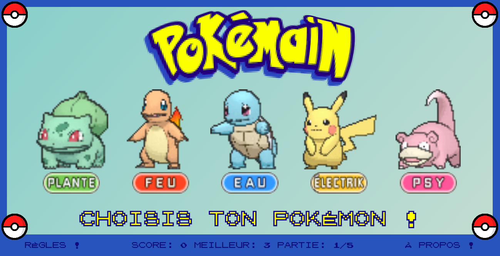

Pokémain
Pierre/Papier/Ciseaux : attrapez-les tous!
Projet d'initiation au Javascript, Pokémain offre la possibilité à l'utilisateur de jouer contre l'ordinateur à une version revisitée du Pierre/Papier/Ciseaux, en 5 manches, avec sauvegarde du score en cours et du meilleur score de l'utilisateur. Intuitif, les règles sont détaillées sur un panneau global, avec un rappel au survol de chaque Pokémon.

Codes utilisés : HTML, CSS (responsive), Javascript.
En cours : migration vers AngularJS, UX amélioriée.
Perspectives : ajout de mini-jeux supplémentaires à débloquer en fonction du meilleur score acquis.
Code source, Lien